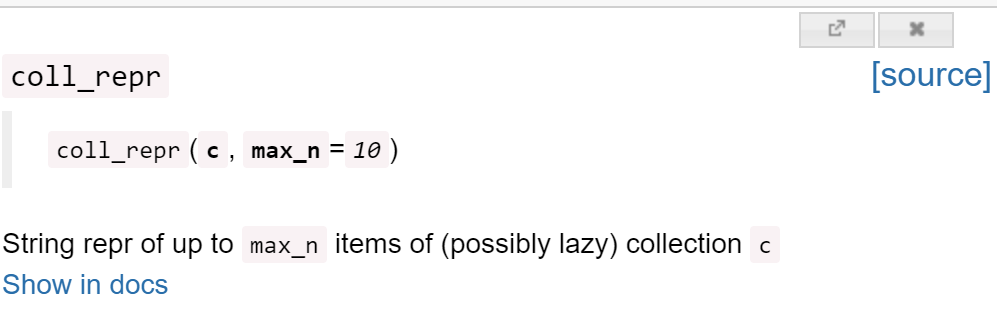

colab_link('index')A tour of fastcore
Here’s a (somewhat) quick tour of a few higlights from fastcore.
Documentation
All fast.ai projects, including this one, are built with nbdev, which is a full literate programming environment built on Jupyter Notebooks. That means that every piece of documentation, including the page you’re reading now, can be accessed as interactive Jupyter notebooks. In fact, you can even grab a link directly to a notebook running interactively on Google Colab - if you want to follow along with this tour, click the link below:
The full docs are available at fastcore.fast.ai. The code in the examples and in all fast.ai libraries follow the fast.ai style guide. In order to support interactive programming, all fast.ai libraries are designed to allow for import * to be used safely, particular by ensuring that __all__ is defined in all packages. In order to see where a function is from, just type it:
coll_repr<function fastcore.foundation.coll_repr(c, max_n=10)>For more details, including a link to the full documentation and source code, use doc, which pops up a window with this information:
doc(coll_repr)
The documentation also contains links to any related functions or classes, which appear like this: coll_repr (in the notebook itself you will just see a word with back-ticks around it; the links are auto-generated in the documentation site). The documentation will generally show one or more examples of use, along with any background context necessary to understand them. As you’ll see, the examples for each function and method are shown as tests, rather than example outputs, so let’s start by explaining that.
Testing
fastcore’s testing module is designed to work well with nbdev, which is a full literate programming environment built on Jupyter Notebooks. That means that your tests, docs, and code all live together in the same notebook. fastcore and nbdev’s approach to testing starts with the premise that all your tests should pass. If one fails, no more tests in a notebook are run.
Tests look like this:
test_eq(coll_repr(range(1000), 5), '(#1000) [0,1,2,3,4...]')That’s an example from the docs for coll_repr. As you see, it’s not showing you the output directly. Here’s what that would look like:
coll_repr(range(1000), 5)'(#1000) [0,1,2,3,4...]'So, the test is actually showing you what the output looks like, because if the function call didn’t return '(#1000) [0,1,2,3,4...]', then the test would have failed.
So every test shown in the docs is also showing you the behavior of the library — and vice versa!
Test functions always start with test_, and then follow with the operation being tested. So test_eq tests for equality (as you saw in the example above). This includes tests for equality of arrays and tensors, lists and generators, and many more:
test_eq([0,1,2,3], np.arange(4))When a test fails, it prints out information about what was expected:
test_eq([0,1,2,3], np.arange(3))----
AssertionError: ==:
[0, 1, 2, 3]
[0 1 2]If you want to check that objects are the same type, rather than the just contain the same collection, use test_eq_type.
You can test with any comparison function using test, e.g test whether an object is less than:
test(2, 3, operator.lt)You can even test that exceptions are raised:
def divide_zero(): return 1/0
test_fail(divide_zero)…and test that things are printed to stdout:
test_stdout(lambda: print('hi'), 'hi')Foundations
fast.ai is unusual in that we often use mixins in our code. Mixins are widely used in many programming languages, such as Ruby, but not so much in Python. We use mixins to attach new behavior to existing libraries, or to allow modules to add new behavior to our own classes, such as in extension modules. One useful example of a mixin we define is Path.ls, which lists a directory and returns an L (an extended list class which we’ll discuss shortly):
p = Path('images')
p.ls()(#6) [Path('images/mnist3.png'),Path('images/att_00000.png'),Path('images/puppy.jpg'),Path('images/att_00005.png'),Path('images/att_00007.png'),Path('images/att_00006.png')]You can easily add you own mixins with the patch decorator, which takes advantage of Python 3 function annotations to say what class to patch:
@patch
def num_items(self:Path): return len(self.ls())
p.num_items()6We also use **kwargs frequently. In python **kwargs in a parameter like means “put any additional keyword arguments into a dict called kwargs”. Normally, using kwargs makes an API quite difficult to work with, because it breaks things like tab-completion and popup lists of signatures. utils provides use_kwargs and delegates to avoid this problem. See our detailed article on delegation on this topic.
GetAttr solves a similar problem (and is also discussed in the article linked above): it’s allows you to use Python’s exceptionally useful __getattr__ magic method, but avoids the problem that normally in Python tab-completion and docs break when using this. For instance, you can see here that Python’s dir function, which is used to find the attributes of a python object, finds everything inside the self.default attribute here:
class Author:
def __init__(self, name): self.name = name
class ProductPage(GetAttr):
_default = 'author'
def __init__(self,author,price,cost): self.author,self.price,self.cost = author,price,cost
p = ProductPage(Author("Jeremy"), 1.50, 0.50)
[o for o in dir(p) if not o.startswith('_')]['author', 'cost', 'name', 'price']Looking at that ProductPage example, it’s rather verbose and duplicates a lot of attribute names, which can lead to bugs later if you change them only in one place. fastcore provides store_attr to simplify this common pattern. It also provides basic_repr to give simple objects a useful repr:
class ProductPage:
def __init__(self,author,price,cost): store_attr()
__repr__ = basic_repr('author,price,cost')
ProductPage("Jeremy", 1.50, 0.50)__main__.ProductPage(author='Jeremy', price=1.5, cost=0.5)One of the most interesting fastcore functions is the funcs_kwargs decorator. This allows class behavior to be modified without sub-classing. This can allow folks that aren’t familiar with object-oriented programming to customize your class more easily. Here’s an example of a class that uses funcs_kwargs:
@funcs_kwargs
class T:
_methods=['some_method']
def __init__(self, **kwargs): assert not kwargs, f'Passed unknown args: {kwargs}'
p = T(some_method = print)
p.some_method("hello")helloThe assert not kwargs above is used to ensure that the user doesn’t pass an unknown parameter (i.e one that’s not in _methods). fastai uses funcs_kwargs in many places, for instance, you can customize any part of a DataLoader by passing your own methods.
fastcore also provides many utility functions that make a Python programmer’s life easier, in fastcore.utils. We won’t look at many here, since you can easily look at the docs yourself. To get you started, have a look at the docs for chunked (remember, if you’re in a notebook, type doc(chunked)), which is a handy function for creating lazily generated batches from a collection.
Python’s ProcessPoolExecutor is extended to allow max_workers to be set to 0, to easily turn off parallel processing. This makes it easy to debug your code in serial, then run it in parallel. It also allows you to pass arguments to your parallel function, and to ensure there’s a pause between calls, in case the process you are running has race conditions. parallel makes parallel processing even easier to use, and even adds an optional progress bar.
L
Like most languages, Python allows for very concise syntax for some very common types, such as list, which can be constructed with [1,2,3]. Perl’s designer Larry Wall explained the reasoning for this kind of syntax:
In metaphorical honor of Huffman’s compression code that assigns smaller numbers of bits to more common bytes. In terms of syntax, it simply means that commonly used things should be shorter, but you shouldn’t waste short sequences on less common constructs.
On this basis, fastcore has just one type that has a single letter name: L. The reason for this is that it is designed to be a replacement for list, so we want it to be just as easy to use as [1,2,3]. Here’s how to create that as an L:
L(1,2,3)(#3) [1,2,3]The first thing to notice is that an L object includes in its representation its number of elements; that’s the (#3) in the output above. If there’s more than 10 elements, it will automatically truncate the list:
p = L.range(20).shuffle()
p(#20) [5,1,9,10,18,13,6,17,3,16...]L contains many of the same indexing ideas that NumPy’s array does, including indexing with a list of indexes, or a boolean mask list:
p[2,4,6](#3) [9,18,6]It also contains other methods used in array, such as L.argwhere:
p.argwhere(ge(15))(#5) [4,7,9,18,19]As you can see from this example, fastcore also includes a number of features that make a functional style of programming easier, such as a full range of boolean functions (e.g ge, gt, etc) which give the same answer as the functions from Python’s operator module if given two parameters, but return a curried function if given one parameter.
There’s too much functionality to show it all here, so be sure to check the docs. Many little things are added that we thought should have been in list in the first place, such as making this do what you’d expect (which is an error with list, but works fine with L):
1 + L(2,3,4)(#4) [1,2,3,4]Transforms
A Transform is the main building block of the fastai data pipelines. In the most general terms a transform can be any function you want to apply to your data, however the Transform class provides several mechanisms that make the process of building them easy and flexible (see the docs for information about each of these):
- Type dispatch
- Dispatch over tuples
- Reversability
- Type propagation
- Preprocessing
- Filtering based on the dataset type
- Ordering
- Appending new behavior with decorators
Transform looks for three special methods, encodes, decodes, and setups, which provide the implementation for __call__, decode, and setup respectively. For instance:
class A(Transform):
def encodes(self, x): return x+1
A()(1)2For simple transforms like this, you can also use Transform as a decorator:
@Transform
def f(x): return x+1
f(1)2Transforms can be composed into a Pipeline:
@Transform
def g(x): return x/2
pipe = Pipeline([f,g])
pipe(3)2.0The power of Transform and Pipeline is best understood by seeing how they’re used to create a complete data processing pipeline. This is explained in chapter 11 of the fastai book, which is available for free in Jupyter Notebook format.